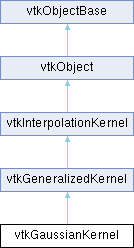

|
Etrek
|
|
Etrek
|
a spherical Gaussian interpolation kernel More...
#include <vtkGaussianKernel.h>

Public Member Functions | |
| void | Initialize (vtkAbstractPointLocator *loc, vtkDataSet *ds, vtkPointData *pd) override |
| vtkIdType | ComputeWeights (double x[3], vtkIdList *pIds, vtkDoubleArray *prob, vtkDoubleArray *weights) override |
| vtkIdType | ComputeWeights (double x[3], vtkIdList *pIds, vtkDoubleArray *weights) override |
| vtkSetClampMacro (Sharpness, double, 1, VTK_FLOAT_MAX) | |
| vtkGetMacro (Sharpness, double) | |
| Public Member Functions inherited from vtkGeneralizedKernel | |
| vtkIdType | ComputeBasis (double x[3], vtkIdList *pIds, vtkIdType ptId=0) override |
| vtkIdType | ComputeWeights (double x[3], vtkIdList *pIds, vtkDoubleArray *weights) override |
| vtkTypeMacro (vtkGeneralizedKernel, vtkInterpolationKernel) | |
| void | PrintSelf (ostream &os, vtkIndent indent) override |
| vtkSetMacro (KernelFootprint, int) | |
| vtkGetMacro (KernelFootprint, int) | |
| void | SetKernelFootprintToRadius () |
| void | SetKernelFootprintToNClosest () |
| vtkSetClampMacro (Radius, double, 0.0, VTK_FLOAT_MAX) | |
| vtkGetMacro (Radius, double) | |
| vtkSetClampMacro (NumberOfPoints, int, 1, VTK_INT_MAX) | |
| vtkGetMacro (NumberOfPoints, int) | |
| vtkSetMacro (NormalizeWeights, bool) | |
| vtkGetMacro (NormalizeWeights, bool) | |
| vtkBooleanMacro (NormalizeWeights, bool) | |
| Public Member Functions inherited from vtkInterpolationKernel | |
| vtkAbstractTypeMacro (vtkInterpolationKernel, vtkObject) | |
| void | PrintSelf (ostream &os, vtkIndent indent) override |
| vtkSetMacro (RequiresInitialization, bool) | |
| vtkGetMacro (RequiresInitialization, bool) | |
| vtkBooleanMacro (RequiresInitialization, bool) | |
| Public Member Functions inherited from vtkObject | |
| vtkBaseTypeMacro (vtkObject, vtkObjectBase) | |
| virtual void | DebugOn () |
| virtual void | DebugOff () |
| bool | GetDebug () |
| void | SetDebug (bool debugFlag) |
| virtual void | Modified () |
| virtual vtkMTimeType | GetMTime () |
| void | PrintSelf (ostream &os, vtkIndent indent) override |
| void | RemoveObserver (unsigned long tag) |
| void | RemoveObservers (unsigned long event) |
| void | RemoveObservers (const char *event) |
| void | RemoveAllObservers () |
| vtkTypeBool | HasObserver (unsigned long event) |
| vtkTypeBool | HasObserver (const char *event) |
| vtkTypeBool | InvokeEvent (unsigned long event) |
| vtkTypeBool | InvokeEvent (const char *event) |
| std::string | GetObjectDescription () const override |
| unsigned long | AddObserver (unsigned long event, vtkCommand *, float priority=0.0f) |
| unsigned long | AddObserver (const char *event, vtkCommand *, float priority=0.0f) |
| vtkCommand * | GetCommand (unsigned long tag) |
| void | RemoveObserver (vtkCommand *) |
| void | RemoveObservers (unsigned long event, vtkCommand *) |
| void | RemoveObservers (const char *event, vtkCommand *) |
| vtkTypeBool | HasObserver (unsigned long event, vtkCommand *) |
| vtkTypeBool | HasObserver (const char *event, vtkCommand *) |
| template<class U, class T> | |
| unsigned long | AddObserver (unsigned long event, U observer, void(T::*callback)(), float priority=0.0f) |
| template<class U, class T> | |
| unsigned long | AddObserver (unsigned long event, U observer, void(T::*callback)(vtkObject *, unsigned long, void *), float priority=0.0f) |
| template<class U, class T> | |
| unsigned long | AddObserver (unsigned long event, U observer, bool(T::*callback)(vtkObject *, unsigned long, void *), float priority=0.0f) |
| vtkTypeBool | InvokeEvent (unsigned long event, void *callData) |
| vtkTypeBool | InvokeEvent (const char *event, void *callData) |
| virtual void | SetObjectName (const std::string &objectName) |
| virtual std::string | GetObjectName () const |
| Public Member Functions inherited from vtkObjectBase | |
| const char * | GetClassName () const |
| virtual vtkTypeBool | IsA (const char *name) |
| virtual vtkIdType | GetNumberOfGenerationsFromBase (const char *name) |
| virtual void | Delete () |
| virtual void | FastDelete () |
| void | InitializeObjectBase () |
| void | Print (ostream &os) |
| void | Register (vtkObjectBase *o) |
| virtual void | UnRegister (vtkObjectBase *o) |
| int | GetReferenceCount () |
| void | SetReferenceCount (int) |
| bool | GetIsInMemkind () const |
| virtual void | PrintHeader (ostream &os, vtkIndent indent) |
| virtual void | PrintTrailer (ostream &os, vtkIndent indent) |
| virtual bool | UsesGarbageCollector () const |
Protected Attributes | |
| double | Sharpness |
| double | F2 |
| Protected Attributes inherited from vtkGeneralizedKernel | |
| int | KernelFootprint |
| double | Radius |
| int | NumberOfPoints |
| bool | NormalizeWeights |
| Protected Attributes inherited from vtkInterpolationKernel | |
| bool | RequiresInitialization |
| vtkAbstractPointLocator * | Locator |
| vtkDataSet * | DataSet |
| vtkPointData * | PointData |
| Protected Attributes inherited from vtkObject | |
| bool | Debug |
| vtkTimeStamp | MTime |
| vtkSubjectHelper * | SubjectHelper |
| std::string | ObjectName |
| Protected Attributes inherited from vtkObjectBase | |
| std::atomic< int32_t > | ReferenceCount |
| vtkWeakPointerBase ** | WeakPointers |
| static vtkGaussianKernel * | New () |
| vtkTypeMacro (vtkGaussianKernel, vtkGeneralizedKernel) | |
| void | PrintSelf (ostream &os, vtkIndent indent) override |
Additional Inherited Members | |
| Public Types inherited from vtkGeneralizedKernel | |
| enum | KernelStyle { RADIUS = 0 , N_CLOSEST = 1 } |
| Static Public Member Functions inherited from vtkObject | |
| static vtkObject * | New () |
| static void | BreakOnError () |
| static void | SetGlobalWarningDisplay (vtkTypeBool val) |
| static void | GlobalWarningDisplayOn () |
| static void | GlobalWarningDisplayOff () |
| static vtkTypeBool | GetGlobalWarningDisplay () |
| Static Public Member Functions inherited from vtkObjectBase | |
| static vtkTypeBool | IsTypeOf (const char *name) |
| static vtkIdType | GetNumberOfGenerationsFromBaseType (const char *name) |
| static vtkObjectBase * | New () |
| static void | SetMemkindDirectory (const char *directoryname) |
| static bool | GetUsingMemkind () |
| Protected Member Functions inherited from vtkInterpolationKernel | |
| virtual void | FreeStructures () |
| Protected Member Functions inherited from vtkObject | |
| void | RegisterInternal (vtkObjectBase *, vtkTypeBool check) override |
| void | UnRegisterInternal (vtkObjectBase *, vtkTypeBool check) override |
| void | InternalGrabFocus (vtkCommand *mouseEvents, vtkCommand *keypressEvents=nullptr) |
| void | InternalReleaseFocus () |
| Protected Member Functions inherited from vtkObjectBase | |
| virtual void | ReportReferences (vtkGarbageCollector *) |
| vtkObjectBase (const vtkObjectBase &) | |
| void | operator= (const vtkObjectBase &) |
| Static Protected Member Functions inherited from vtkObjectBase | |
| static vtkMallocingFunction | GetCurrentMallocFunction () |
| static vtkReallocingFunction | GetCurrentReallocFunction () |
| static vtkFreeingFunction | GetCurrentFreeFunction () |
| static vtkFreeingFunction | GetAlternateFreeFunction () |
a spherical Gaussian interpolation kernel
vtkGaussianKernel is an interpolation kernel that simply returns the weights for all points found in the sphere defined by radius R. The weights are computed as: exp(-(s*r/R)^2) where r is the distance from the point to be interpolated to a neighboring point within R. The sharpness s simply affects the rate of fall off of the Gaussian. (A more general Gaussian kernel is available from vtkEllipsoidalGaussianKernel.)
|
overridevirtual |
Given a point x, a list of basis points pIds, and a probability weighting function prob, compute interpolation weights associated with these basis points. Note that basis points list pIds, the probability weighting prob, and the weights array are provided by the caller of the method, and may be dynamically resized as necessary. The method returns the number of weights (pIds may be resized in some cases). Typically this method is called after ComputeBasis(), although advanced users can invoke ComputeWeights() and provide the interpolation basis points pIds directly. The probably weighting prob are numbers 0<=prob<=1 which are multiplied against the interpolation weights before normalization. They are estimates of local confidence of weights. The prob may be nullptr in which all probabilities are considered =1.
Implements vtkGeneralizedKernel.
|
inlineoverridevirtual |
Given a point x, and a list of basis points pIds, compute interpolation weights associated with these basis points. Note that both the nearby basis points list pIds and the weights array are provided by the caller of the method, and may be dynamically resized as necessary. Typically this method is called after ComputeBasis(), although advanced users can invoke ComputeWeights() and provide the interpolation basis points pIds directly.
Implements vtkInterpolationKernel.
|
overridevirtual |
Initialize the kernel. Overload the superclass to set up internal computational values.
Reimplemented from vtkInterpolationKernel.
|
static |
Standard methods for instantiation, obtaining type information, and printing.
|
overridevirtual |
Methods invoked by print to print information about the object including superclasses. Typically not called by the user (use Print() instead) but used in the hierarchical print process to combine the output of several classes.
Reimplemented from vtkObjectBase.
| vtkGaussianKernel::vtkSetClampMacro | ( | Sharpness | , |
| double | , | ||
| 1 | , | ||
| VTK_FLOAT_MAX | ) |
Set / Get the sharpness (i.e., falloff) of the Gaussian. By default Sharpness=2. As the sharpness increases the effects of distant points are reduced.